Who we are
Meet the group
We are an interdisciplinary team of computer scientists, chemists, and mathematicians working on machine learning for chemical reactions.
Who we are
We are an interdisciplinary team of computer scientists, chemists, and mathematicians working on machine learning for chemical reactions.
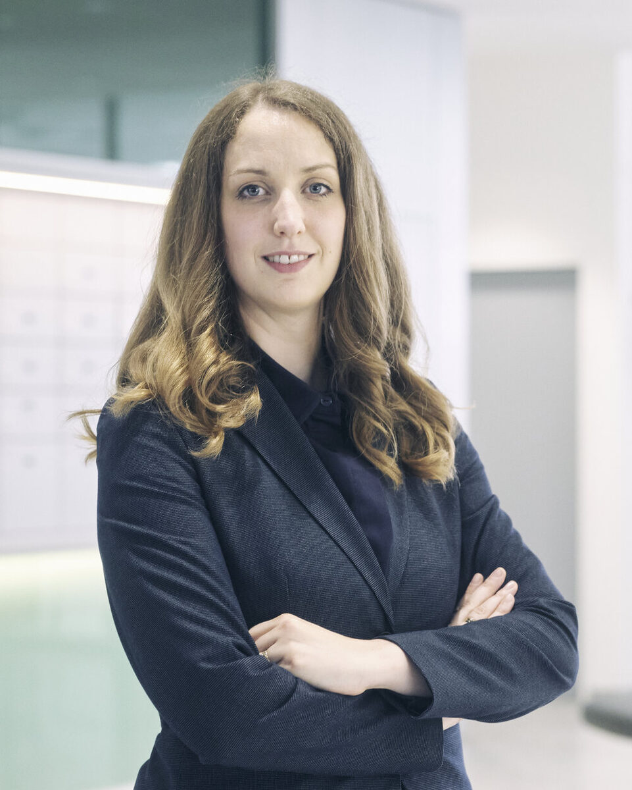
Photo: © Ulrich Zinell
Principal Investigator
Assistant Professor · Group Leader
Esther Heid is an Assistant Professor for Machine Learning for Sustainable Chemistry in the Faculty of Technical Chemistry, TU Wien, Austria, and head of the TU-wide dataTUdiscovery AI/ML service center. She received her Ph.D. in Theoretical Chemistry from the University of Vienna in 2019. She subsequently held postdoctoral positions at MIT (2020–2022) and TU Wien (2022–2024), where she advanced her work at the interface of chemistry and machine learning. In 2024, she was awarded a prestigious ERC Starting Grant along with an FWF START Prize, and started her own research group at TU Wien.
Who we are
Our diverse team of postdocs, PhD students, and project students, with backgrounds ranging from theoretical and wet-lab chemistry to computer science and mathematics.
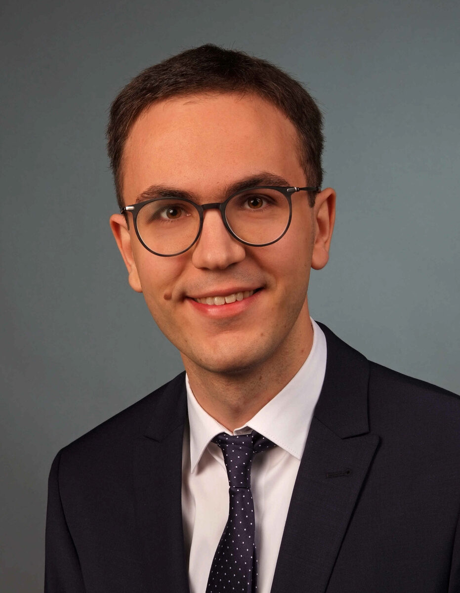
Postdoc · ESPRIT Fellow
Johannes studied chemistry at the University of Stuttgart in Germany. After an internship in France and a master’s thesis in bioinformatics, he moved to Vienna to pursue a PhD at the University of Vienna under the supervision of Prof. Stefan Boresch. His doctoral research combined classical force fields with machine-learning potentials to study the binding affinities of protein–ligand complexes. Following his PhD, Johannes joined the British biotech company Exscientia, now part of Recursion, where he worked in the Drug Discovery team developing novel methods for calculating binding free energies. He later returned to academia as a postdoctoral researcher in Esther’s group, focusing on graph neural networks. Recently, Johannes was awarded an ESPRIT fellowship, which will allow him to pursue his own research on how machine-learned potentials can improve free-energy predictions.
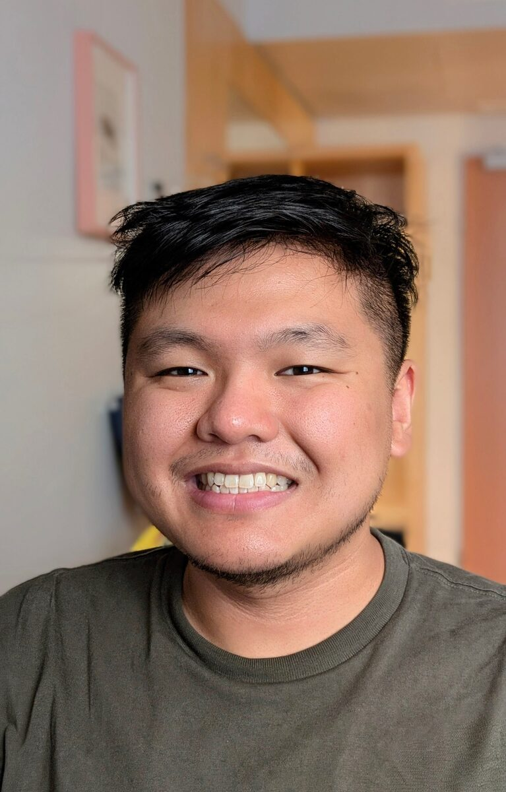
Postdoc · ERC Project
Jonathan is a postdoctoral researcher in Prof. Heid's research group. He graduated with a B.S. from the University of Virginia in 2020 and a Ph.D. from the Massachusetts Institute of Technology in 2026. During his Ph.D., Jonathan studied acid-base and ionization phenomena, focusing at the intersection of computational chemistry, cheminformatics, and data science. Currently, Jonathan is working on the ERC Project for modeling enzymatic reactions. He is also continuing to study solvation effects for ionizable compounds. Outside of research, Jonathan enjoys developing video games, reading science fiction and fantasy books, listening to and making music, and eating tasty food from around the world.
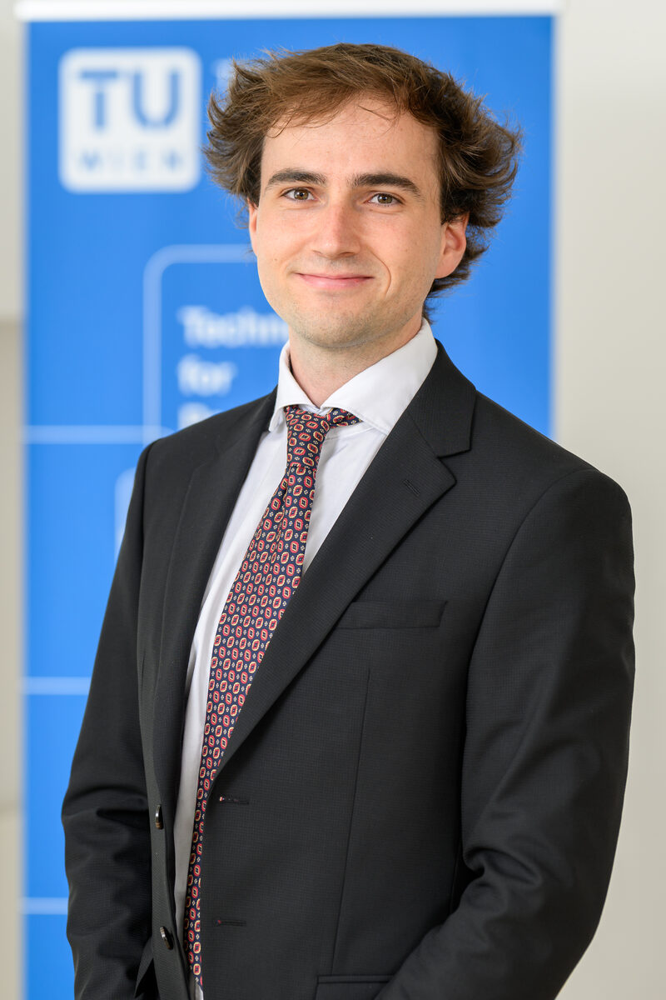
PhD Student · ERC Project
Jasper De Landsheere is a PhD student working on the ERC-funded project "Deep Learning for Chemical Reactions". He received his Master's degree in Data Science from the Technical University of Vienna in 2025. He also holds a Master's and Bachelor's degree in Bioscience Engineering Technology from Ghent University. His research focuses on developing new deep learning architectures for learning over chemical reactions.
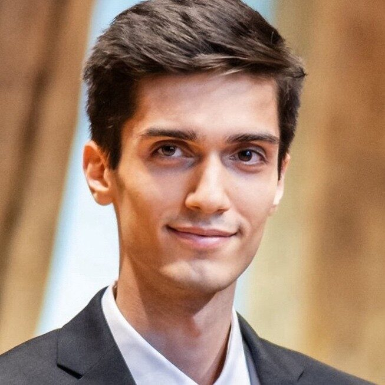
PhD Student
Leonard studied computer engineering and data science at TU Wien. His research interests lie at the intersection of computational chemistry and machine learning. Before joining the Heid Lab as a PhD student, he worked on interdisciplinary projects as a machine learning scientist, most recently in the Department of Geosciences and the Machine Learning Research Unit at TU Wien, as well as in Neuroimaging Labs at the Medical University of Vienna.
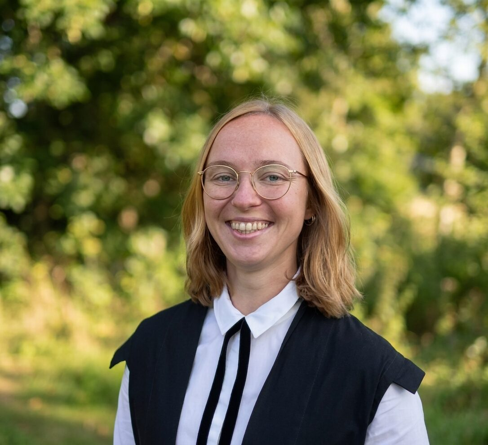
PhD Student · DC Computational Sustainability
Charlotte joined the lab in May 2025 as part of the Doctoral College on Computational Sustainability. She got a BSc in Bioinformatics from TU Munich and an MSc in Computer Science from the University of Oxford, where she worked on generative modeling for brain data synthesis. Before joining the lab, she also gained research experience in proteomics at the Max Planck Institute of Biochemistry. Outside of the lab, she enjoys knitting and (wine) hiking, as well as telling people she has signed up for half marathons, which she then repeatedly regrets as soon as the race approaches.
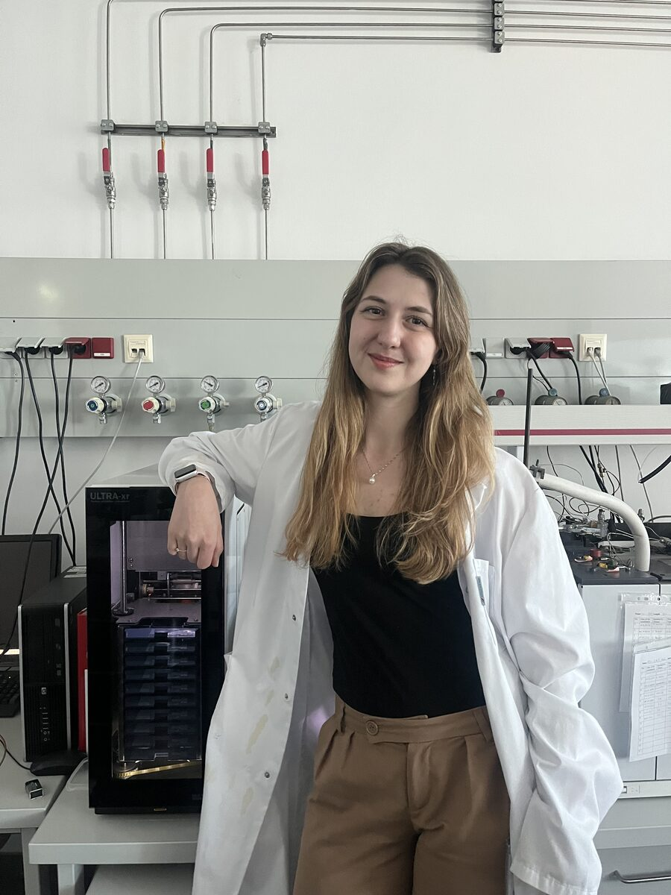
PhD Student · Shared doctoral researcher
Synnöve Lemke is a shared doctoral researcher working at the interface of analytical chemistry and machine learning. Her research focuses on breathomics for the early detection of lung cancer, combining comprehensive two-dimensional gas chromatography–mass spectrometry (GC×GC–MS) with advanced pattern recognition methods, including convolutional neural networks (CNNs). Through her work, she aims to advance non-invasive diagnostic approaches and contribute to interdisciplinary, data-driven solutions in healthcare.
Synnöve holds a B.Sc. in Biochemistry from the University of Greifswald and an M.Sc. in Chemical Biology from Friedrich-Schiller-University Jena. During her master's studies, she completed a one-year Erasmus research internship at the University of Vienna.
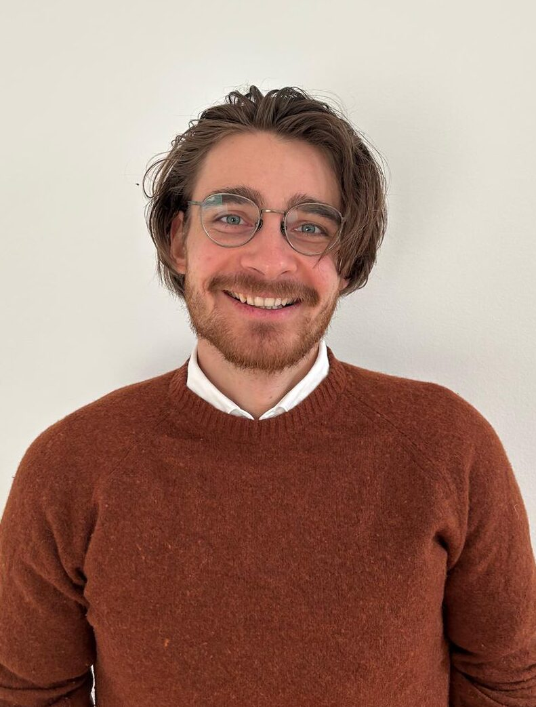
PhD Student
Konstantin Alexander Mark is a doctoral researcher working on the mathematical and methodological foundations of generative machine learning for chemical reactions. His research focuses on probabilistic models that generate molecular geometries and reactive structures, particularly flow-matching and related stochastic approaches. He investigates how these models can be made more efficient, controllable, and consistent with physical and chemical constraints. He is especially interested in transition-state generation, guided sampling, Schrödinger bridges, and the mathematical principles underlying generative processes. In this role, he helps connect the group's chemical applications to developments in generative modeling, probability theory, and scientific machine learning. In the group, he brings a strongly mathematics-driven perspective to projects at the interface of machine learning, reaction modeling, and computational chemistry.
Before starting his doctoral research, he studied Technical Mathematics at TU Wien, specializing in functional analysis, numerics and optimisation.
PhD Student · Shared with Katharina Schröder
Leon is a PhD candidate from Germany working under the shared supervision of Katharina Schröder and Esther Heid. He obtained his MSc in Chemistry from the University of Regensburg, where his research focused on photocatalytic transformations. His current doctoral research lies at the interface of asymmetric organocatalysis, high-throughput experimentation, and data-driven reaction development. In particular, he works on the rational design of experimental datasets for asymmetric organocatalytic reactions, with the aim of generating high-quality, machine-learning-ready data for reaction prediction, optimization, and mechanistic insight. His research combines synthetic organic chemistry with automated experimentation and computational approaches to better understand and navigate complex reaction spaces.
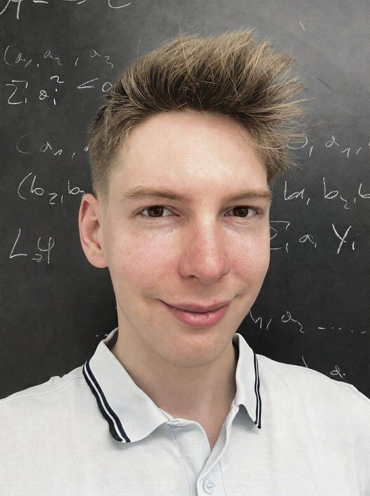
PhD Student · DOC Fellow
Maximilian P.-P. Kovar started with his diploma thesis in 2025 and has been a doctoral researcher since 2026. Within his DOC Fellowship of the Austrian Academy of Sciences, he investigates the predictability of chemical reactions using carefully selected representative reactions computed with robust high-throughput quantum-chemical workflows. His work focuses on how chemical reactions can be described reliably, calculated systematically, and represented in a way that is useful for machine learning. He is especially interested in dataset impact, chemical plausibility, reaction energetics, and the reliable prediction of reactive processes. In this role, he helps connect the group's methodological and machine-learning efforts to the underlying chemistry. In the group, he brings a strongly chemistry-driven perspective to projects at the interface of quantum chemistry, reaction modeling, and molecular simulations.
Before starting his PhD, he studied Chemistry at the University of Vienna and Chemistry and Technology of Materials at TU Wien.
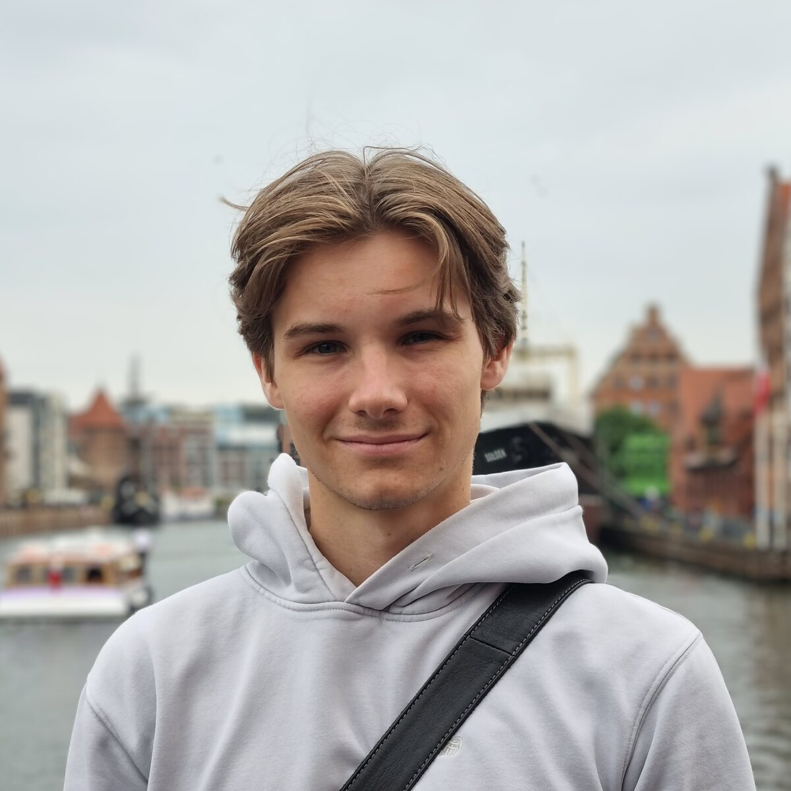
Student Assistant
Anton is a research student working on machine learning for computational chemistry. He holds a bachelor's degree in Computer Science from TU Wien and is currently pursuing a master's degree in Computational Science and Engineering, focusing on mathematics and theoretical/computational chemistry.
In the group, he co-developed ChemTorch, a framework for developing and evaluating machine learning models for chemical reactions. He has also worked on transition-state search workflows and stereochemistry-aware graph representations for transition-state generation.
His research interests include representation learning and generative modeling for molecular systems, with a particular interest in developing mathematically grounded machine learning methodology.
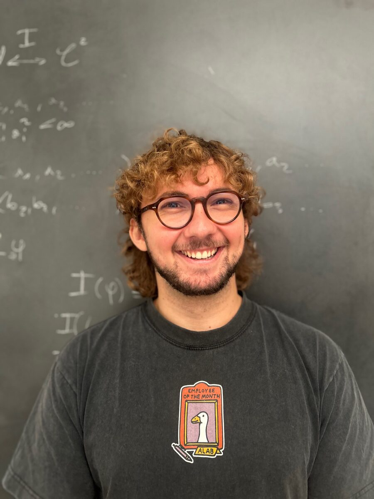
MSc thesis
Sebastian is a master student doing his master thesis on generative modeling for enzyme engineering together with Prof. Heid. He received his BSc in Computer Science from the Technical University of Graz before moving to Vienna to study Data Science. His interest in computational chemistry and biology sparked while doing small projects such as modeling gene-disease interactions and comparative analysis of mitochondrial genomes of fungi during his studies. While he is not working on his master thesis, he enjoys playing the classical guitar, developing video games and doing martial arts.
BSc thesis
Join us
We're always glad to hear from people with a background in chemistry, computer science, or anything in between — drop us a line.